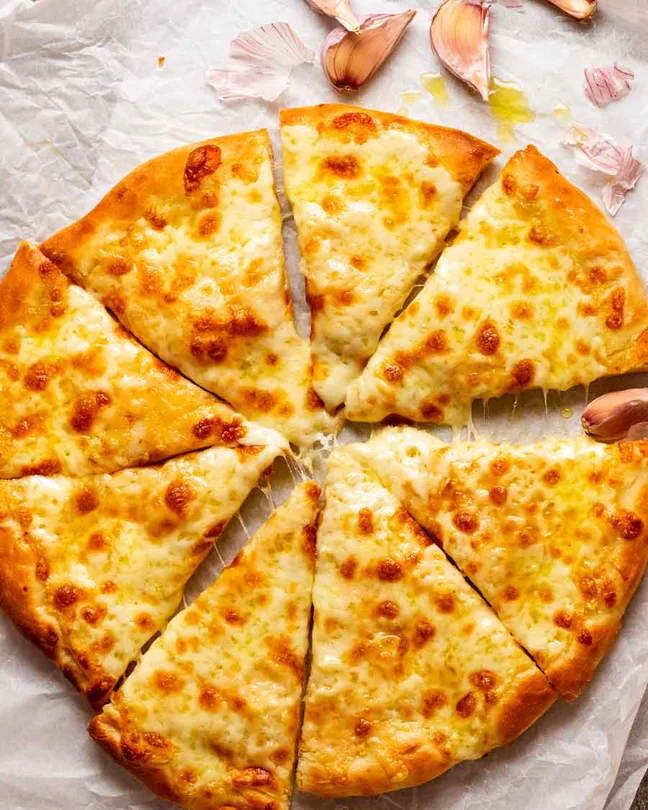

Pizza

Does any visit to your favourite pizzeria start without garlic cheese pizza? Of course not!
My best garlic pizza uses both parmesan and mozzarella, and infuses olive oil with garlic
(it only takes 10 minutes). It’s outrageously good!
Ingrediants
- Pizza dough
- Mozzarella
- Olive Oil
- Garlic
- Salt
Steps
- Steep oil with garlic – Mix the oil and garlic and set aside for 10 minutes to infuse with flavour.
- Stretch your chosen pizza base onto a pizza pan, preferably one with holes in it (crispy base!).
- Spread the garlic infused oil over the base.
- Sprinkle with parmesan then mozzarella, leaving a border around the crust (for gripping purposes).
- Bake for 8 minutes in a hot 250°C oven, rotating the tray halfway, until you have lovely golden spots on the cheese.
Home